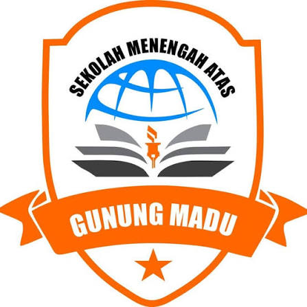

01
Pertumbuhan Ayam
Bobot badan ayam Bangkok dipengaruhi jenis pakan, nutrisi, jumlah pakan, umur, kesehatan, dan lingkungan.

SMA GUNUNG MADU · SIDANG INVENTIONDisusun oleh: Rian Syah · NISN 0084704818
Pembimbing: Criscahyani Pramani Siwi M.Pd
Sekolah: SMA Gunung Madu · Lampung Tengah
Tahun: 2026/2027
Latar belakang, rumusan masalah, tujuan, manfaat, batasan, hipotesis.
Karakteristik ayam Bangkok, nutrisi, dan bentuk pakan.
Metode, lokasi, alat bahan, variabel, prosedur, analisis data.
Hasil penimbangan, perhitungan, dan pembahasan.
Ringkasan temuan dan saran.
Referensi yang digunakan dalam laporan.
Bobot badan ayam Bangkok dipengaruhi jenis pakan, nutrisi, jumlah pakan, umur, kesehatan, dan lingkungan.
Pakan basah dicampur air (lebih lembap); pakan kering tanpa penambahan air (lebih padat).
Belum tentu keduanya memberi hasil sama, sehingga perlu dibandingkan pertambahan bobotnya.
Penelitian membandingkan pakan basah dan kering pada ayam Bangkok dengan jumlah pakan, usia, dan kondisi pemeliharaan yang diperhatikan; bobot ditimbang berkala.
Bagaimana pengaruh pemberian pakan basah pada pertambahan bobot ayam Bangkok?
Bagaimana pengaruh pemberian pakan kering pada pertambahan bobot ayam Bangkok?
Manakah yang lebih efektif antara pakan basah dan pakan kering untuk meningkatkan pertambahan bobot ayam Bangkok?
Mengetahui pengaruh pemberian pakan basah terhadap bobot ayam Bangkok.
Mengetahui pengaruh pemberian pakan kering terhadap bobot ayam Bangkok.
Mengetahui jenis pakan yang lebih efektif meningkatkan bobot ayam Bangkok selama penelitian.
Pakan basah dapat mempengaruhi bobot ayam.
Tubuh relatif besar, tinggi, tegap, dan kuat; beradaptasi baik di Indonesia (Mardiah, 2021).
Indikator pertumbuhan; dipengaruhi genetik, umur, jenis kelamin, pakan, lingkungan (Hastuti, 2021). Rataan jantan 2.919,39 g (Badaruddin, 2024).
Variasi warna bulu, warna shank, bentuk jengger, dan morfometrik (Sitanggang, 2015).
Fase starter–grower butuh protein kasar tinggi untuk otot dan energi metabolis; kekurangan dapat menyebabkan stunting.
Pelet dengan perekat memberi laju pertumbuhan bobot lebih tinggi pada broiler (Praptiwi et al., 2023).
Bobot diukur berkala; komposisi ransum dapat memengaruhi bobot (Satimah et al., 2019; Sari et al., 2020).
Eksperimen dua perlakuan
Lampung Tengah, Lampung
Bebas: jenis pakan (basah/kering). Terikat: pertambahan bobot ayam.
Umur ayam, komposisi dan jumlah pakan, jadwal pemberian, lama pemeliharaan, kondisi kandang.
| No | Alat | Bahan Pakan Basah | Bahan Pakan Kering |
|---|---|---|---|
| 1 | Timbangan (kg) | Ayam Bangkok | Ayam Bangkok |
| 2 | Tempat pakan | Pakan basah (campuran nasi) | Pakan kering (campuran jagung kering) |
| 3 | Tempat minum | Air minum | Air minum |
| 4 | Kandang | – | – |
Ayam, pakan, kandang, alat timbang.
Dua kelompok: pakan basah dan kering.
Menimbang dan mencatat setiap ayam.
Pakan sama jumlah dan jadwal; timbang berkala.
Bobot akhir − bobot awal, bandingkan rata-rata.
Pertambahan bobot = Bobot akhir − Bobot awal
Data dikumpulkan lewat penimbangan sebelum dan sesudah perlakuan, didukung dokumentasi.
Dua ekor ayam Bangkok: satu pakan basah, satu pakan kering. Timbangan dalam kilogram.
| No | Waktu | Tanggal | Pakan Basah (kg) | Pakan Kering (kg) |
|---|---|---|---|---|
| 1 | Awal Penelitian | 9 Agustus 2026 | 0,77 | 1,00 |
| 2 | Minggu ke-1 | 16 Agustus 2026 | 0,85 | 1,05 |
| 3 | Minggu ke-2 | 23 Agustus 2026 | 1,00 | 1,20 |
| 4 | Minggu ke-3 | 30 Agustus 2026 | 1,15 | 1,30 |
| 5 | Minggu ke-4 | 6 September 2026 | 1,30 | 1,40 |
| 6 | Akhir Penelitian | 9 September 2026 | 1,40 | 1,45 |
Tabel 4.1 Hasil Penimbangan Bobot Ayam Bangkok
Pakan basah lebih besar daripada pakan kering
Basah: 0,77 → 1,30 → 1,40 kg. Kering: 1,00 → 1,40 → 1,45 kg. Keduanya meningkat.
Jumlah pakan yang dimakan, nutrisi, umur, kesehatan, dan lingkungan turut memengaruhi pertambahan bobot.
Hanya satu ayam per perlakuan dengan bobot awal berbeda; perlu ayam lebih banyak dan kondisi awal seragam.
Ayam pakan basah bertambah 0,63 kg, pakan kering 0,45 kg; selisih 0,18 kg sebagai informasi awal.
Tambahkan Mardiah (2021), Sitanggang (2015), Hastuti (2021), Badaruddin (2024) bila ada pada naskah final.
Mohon saran dan masukan
RIAN SYAH
Pembimbing: Criscahyani Pramani Siwi M.Pd
SESI TANYA JAWAB